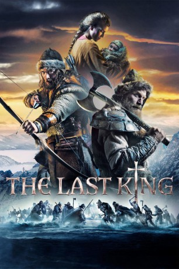
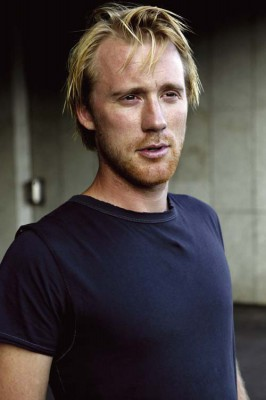
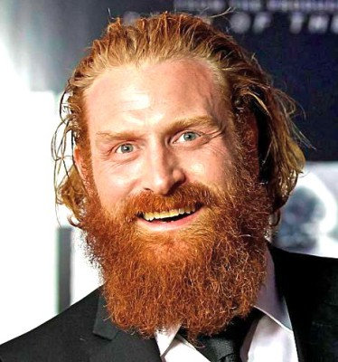

#4419 The Last King - Der Erbe des Königs
Alternativ: The Last King (Englischer Titel)
 
 IMDB-Wertung: 6.1 / 10
IMDB-Wertung: 6.1 / 10  Metascore: 0
Metascore: 0 
Im Jahr 1206 herrscht in Norwegen ein blutiger und brutaler Bürgerkrieg. In dem gebeutelten Land, in dem auch die stärker werdende Kirche langsam nach der Macht greift, ist es an zwei mutigen Kriegern, die mögliche Zukunft des Landes zu schützen. Der König vertraut ihnen auf seinem Sterbebett seinen unehelichen Sohn und potenziellen Erben, Hakon Hakonsson, an. Da die dem König gegnerische Partei sich des Knaben um jeden Preis entledigen möchte, müssen die Leibwächter Skjervald (Jakob Oftebro) und Torstein (Kristofer Hivju) mit dem Baby durch die norwegische Bergwelt flüchten. Keine leichte Aufgabe, wenn sie bedenken, dass von dem Schicksal des Kindes und dem Erfolg ihrer Reise die Zukunft des gesamten Königreichs abhängt…
Jahr: 2016
Dauer: 99 Minuten
FSK: 12
Land: Norwegen Studio: Koch MediaTonspuren: DTS - ,
Untertitel: Deutsch,
Auflösung: 1080p (1920x824) Größe: 5847 MB
Genre: Action, Abenteuer, Drama
Regisseur: Nils Gaup
Drehbuch: Beverly D'Onofrio
Soundtrack:
Darsteller:
- Michael Aasen als Birkebeiner #9
- Anders Dahlberg als Aslak
- Åsmund Brede Eike als Ståle
- Elg Elgesem als Frikk
 Pål Sverre Hagen als Gisle
Pål Sverre Hagen als Gisle-  Thorbjørn Harr als Inge
- Benjamin Helstad als King
-  Kristofer Hivju als Torstein
 Stig Henrik Hoff als Erlend
Stig Henrik Hoff als Erlend Jeppe Beck Laursen als Audun
Jeppe Beck Laursen als Audun Nikolaj Lie Kaas als Orm
Nikolaj Lie Kaas als Orm- Inga Ibsdotter Lilleaas als Ylva
- Thea Sofie Loch Næss als Kristin
 Jakob Oftebro als Skjervald
Jakob Oftebro als Skjervald- Jonathan Oskar Dahlgren als Baby Håkon Håkonson
- Adam Nemet als Gisles Guard
- Jon Inge Nordnes als Birkebeiner #7
- Torkel Dommersnes Soldal als Egil
Datei: X:\2016(G-M)\Last King - Der Erbe des Königs, The (2016, FSK12, 1920x824).mkv seit 15.09.2016
Festplatte: HD 2016(A-Z)
 Es gibt insgesamt 164 Filme in der Gruppe '2016(G-M)'
Es gibt insgesamt 164 Filme in der Gruppe '2016(G-M)'